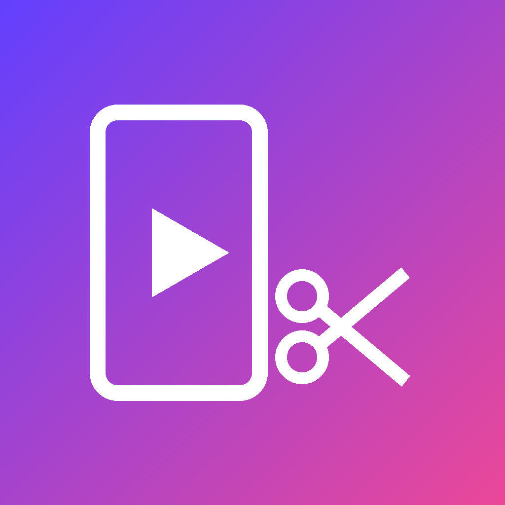

AutoCut Studio
Ferramenta pessoal que transforma vídeos longos em cortes verticais com legenda e publica esses cortes nas contas do próprio usuário.
Cortes automáticosEscolhe os melhores trechos de um vídeo longo, enquadra em 9:16 e adiciona legendas.
Roda no seu computadorO programa é instalado e executado na máquina do próprio usuário. Não há servidor central nosso guardando seus dados.
Publicação oficialPublica no TikTok, YouTube e Instagram somente pelas APIs oficiais, depois que o próprio dono da conta autoriza.
Como a integração com o TikTok funciona
- O dono da conta faz login com o TikTok (Login Kit) e autoriza os escopos
user.info.basicevideo.publish. - O AutoCut Studio guarda o token de acesso, criptografado, no computador do usuário.
- Quando o usuário agenda um corte, o programa envia esse vídeo pela Content Posting API, com o título e a privacidade escolhidos pelo usuário.
- O acesso pode ser revogado a qualquer momento nas configurações do TikTok (Segurança → Gerenciar permissões de apps).
English
AutoCut Studio is a personal, self-hosted tool that turns long videos into vertical clips with captions and publishes those clips to the user's own accounts.
- It runs on the user's own computer; there is no central server collecting user data.
- TikTok integration uses Login Kit (scopes
user.info.basicandvideo.publish) and the Content Posting API, only after the account owner authorizes it. - Access tokens are stored encrypted on the user's computer, and access can be revoked at any time in TikTok's settings.